Gateways e roteadores de LLM (uma chave, vários modelos) + observabilidade.
| Vídeo | Projeto | O que faz | Pasta de origem | |
|---|---|---|---|---|
| Como usar Claude Code GRÁTIS e ILIMITADO com Omn | 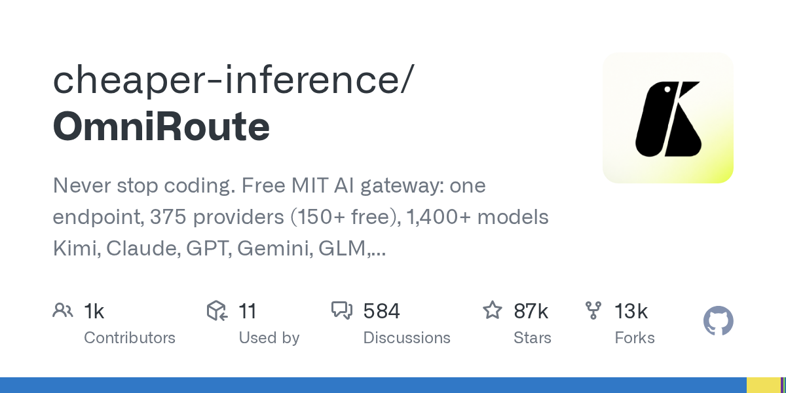 | cheaper-inference/OmniRoute | 86.8k★ · gateway de IA grátis: um endpoint para 375 provedores (150+ grátis). | curado — busca na internet |
| LiteLLM: API Unificada para Mais de 100 Modelos | 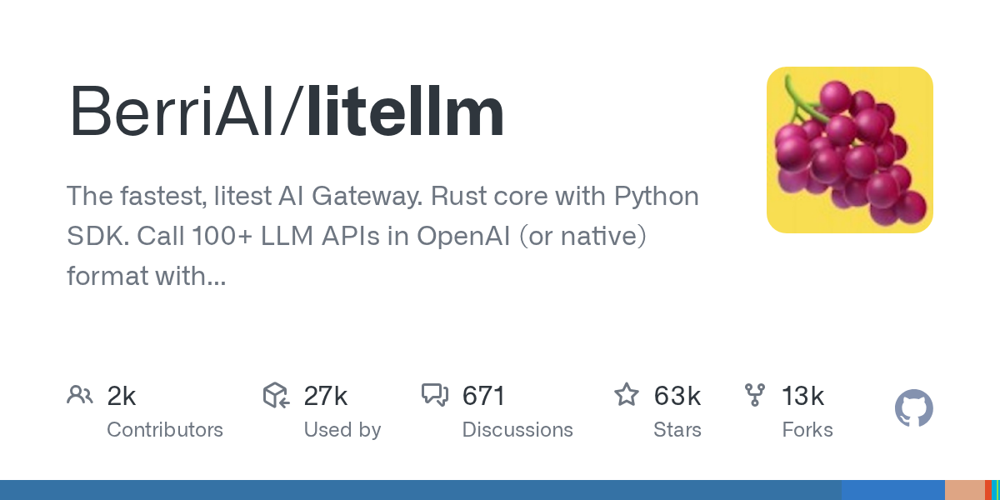 | BerriAI/litellm | 63k★ · chama 100+ APIs de LLM no formato OpenAI, com controle de chaves e custo. | curado — busca na internet |
| NOVO PROVEDOR LIBEROU CLAUDE, GEMINI E KIMI QUAS | 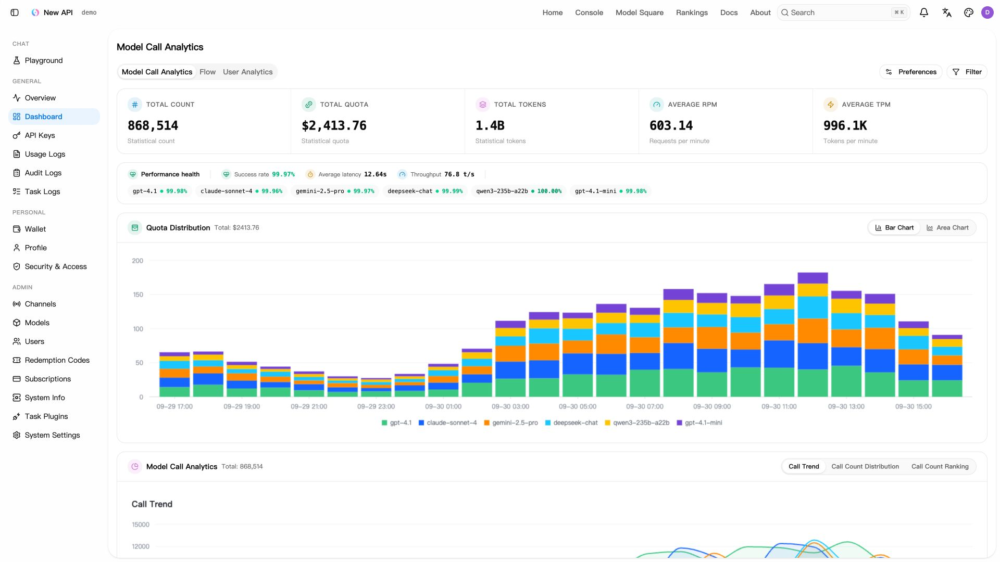 | QuantumNous/new-api | 51.8k★ · gateway self-hosted compatível com OpenAI, Claude e Gemini. | curado — busca na internet |
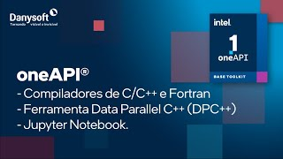 oneAPI: Compiladores de C/C++ e Fortran - Ferram | 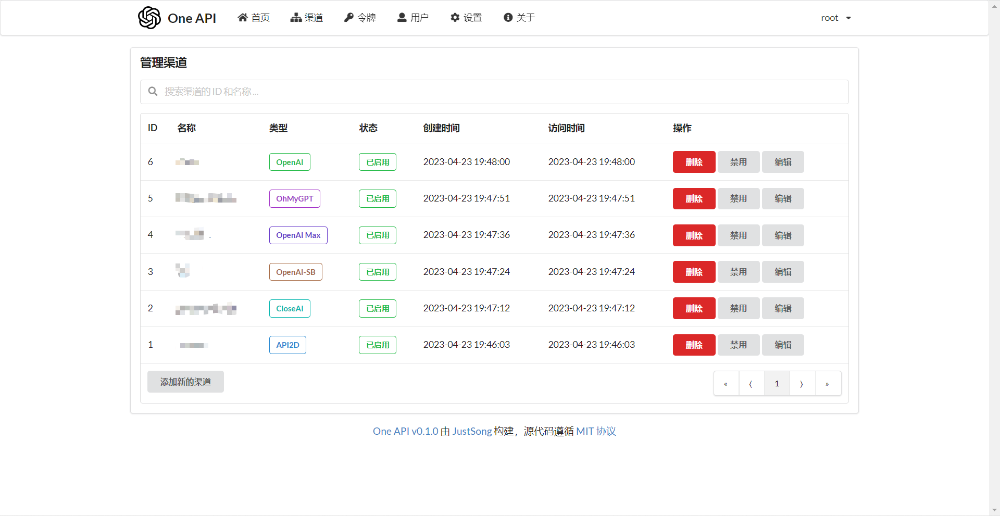 | songquanpeng/one-api | 37.4k★ · gestão e distribuição de chaves de API (OpenAI, Claude, Gemini, DeepSeek). | curado — busca na internet |
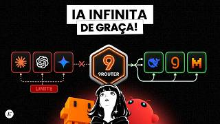 Como Usar o 9Router: IA pra Programar Infinita e | 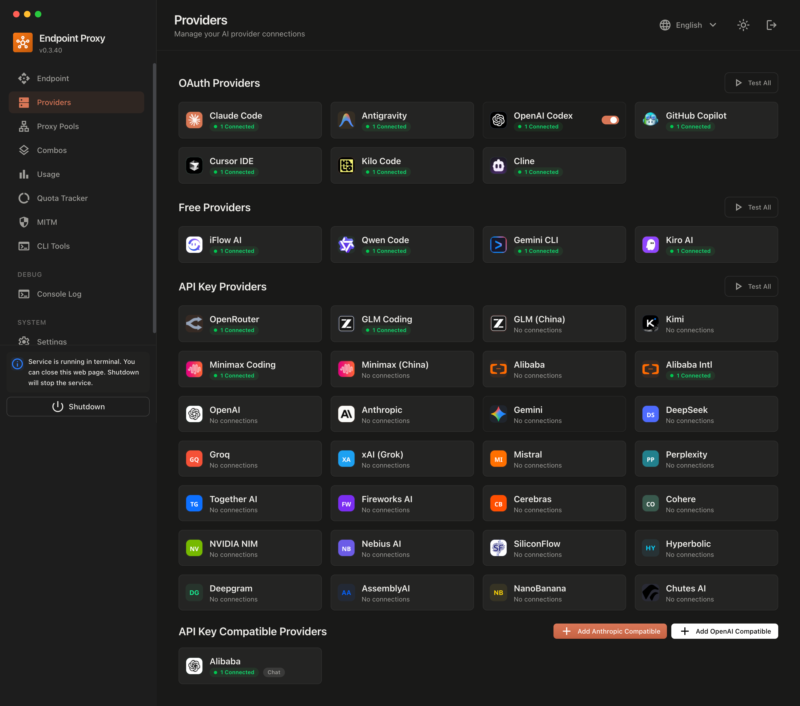 | decolua/9router | 32.3k★ · conecta Claude Code, Codex, Cursor e Cline em modelos grátis (a base do seu painel). | curado — busca na internet |
| O que é Gateway? | 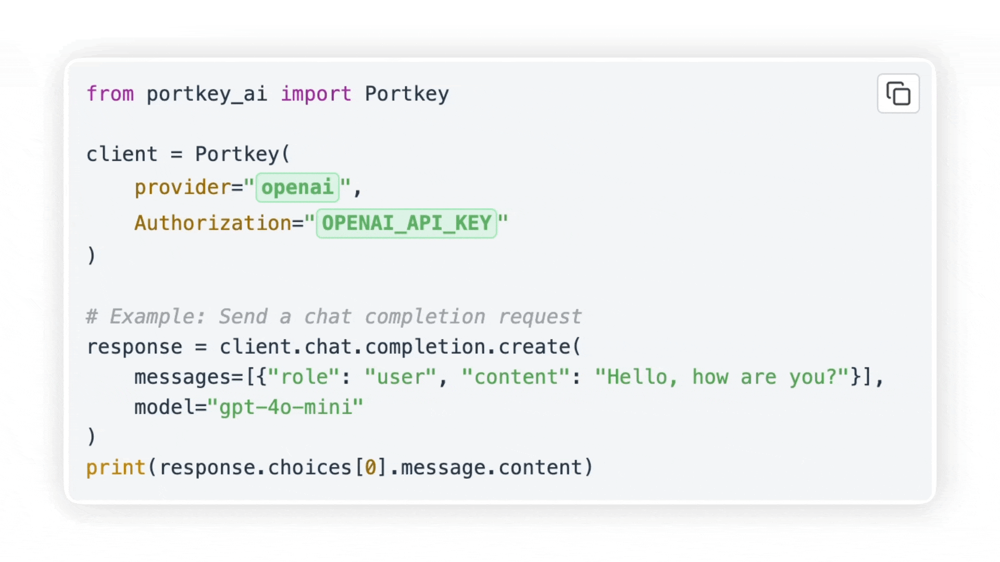 | Portkey-AI/gateway | 13.4k★ · gateway rápido com guardrails, roteando para 1.600+ LLMs. | curado — busca na internet |
| Bifrost: High-Speed Open Source AI Gateway | 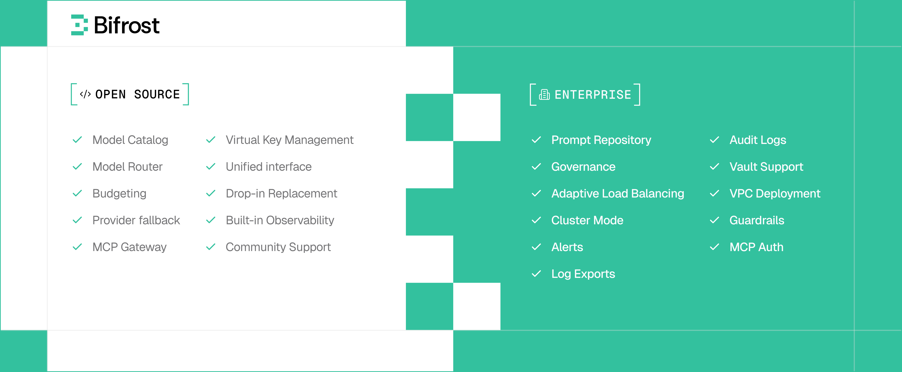 | maximhq/bifrost | 9.5k★ · gateway de LLM e MCP de alta performance. | curado — busca na internet |
| 🚀COMO ESTUDAR PARA O ENCCEJA: O QUE CAI NA PROVA | 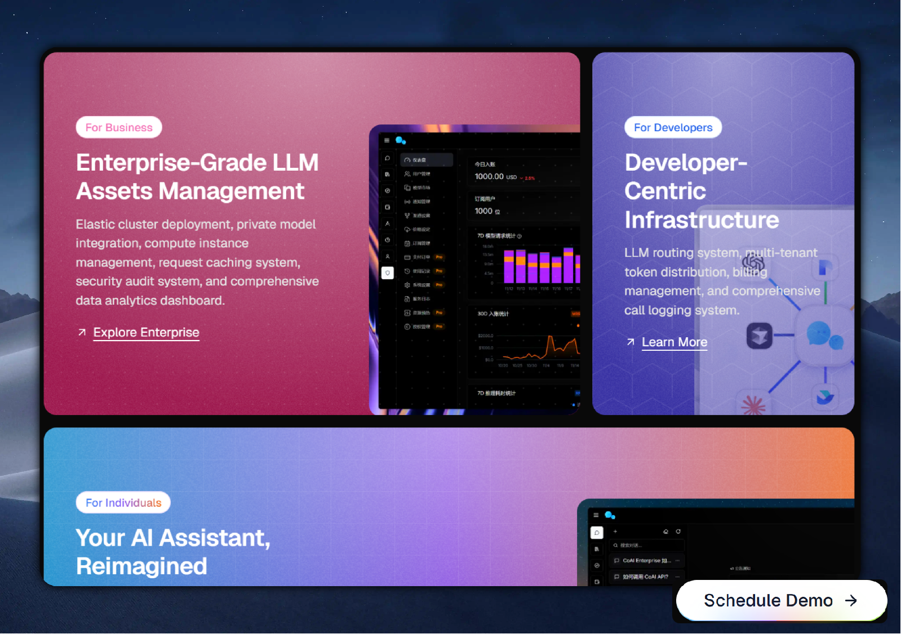 | coaidev/coai | 9.3k★ · solução multi-tenant de IA com painel admin e cobrança. | curado — busca na internet |
| LiteLLM: API Unificada para Mais de 100 Modelos | 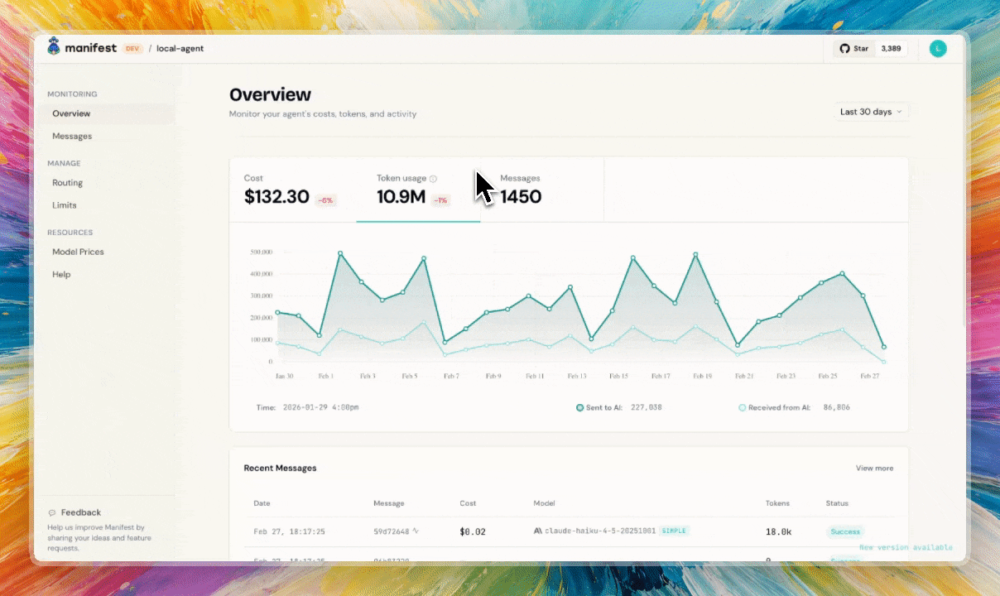 | mnfst/llm-gateway | 7.6k★ · gateway de LLM open-source. | curado — busca na internet |
| CHAT GPT: Você Chegou ao Limite de Criação de Im | 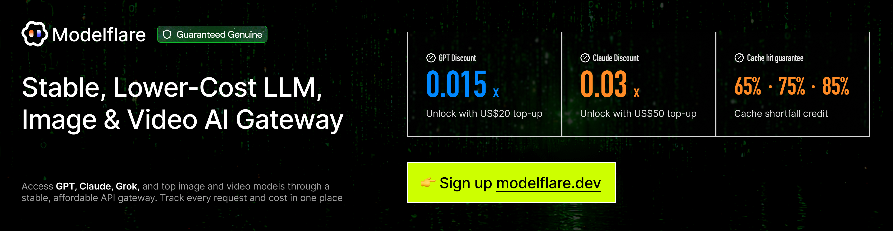 | tbphp/gpt-load | 7.2k★ · gateway self-hosted para várias contas/chaves com balanceamento. | curado — busca na internet |
| [Em Português] Play 2.13 | Tutorial completo (to | 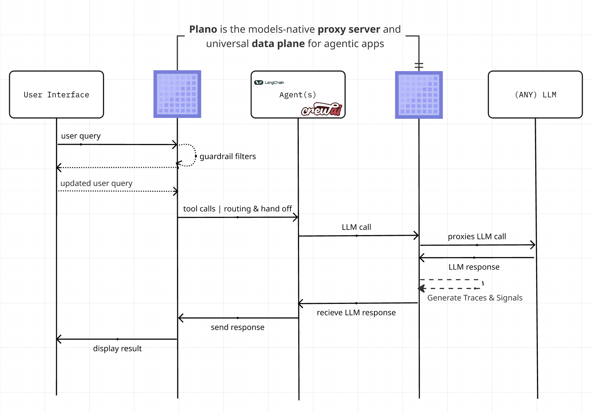 | katanemo/plano | 7.1k★ · proxy/data plane para apps com agentes, com roteamento inteligente. | curado — busca na internet |
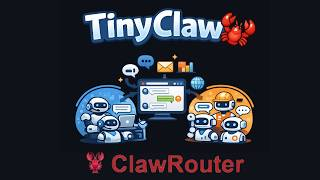 TinyClaw + ClawRouter: IA multiagente e roteamen | 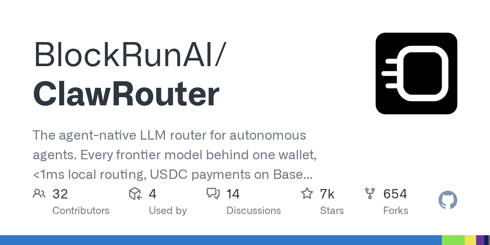 | BlockRunAI/ClawRouter | 6.7k★ · roteador de LLM para agentes autônomos (uma carteira só). | curado — busca na internet |
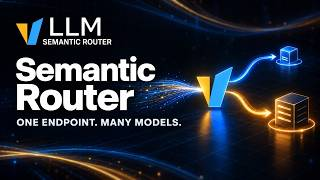 vLLM Semantic Router Explicado: Direcione Requis | 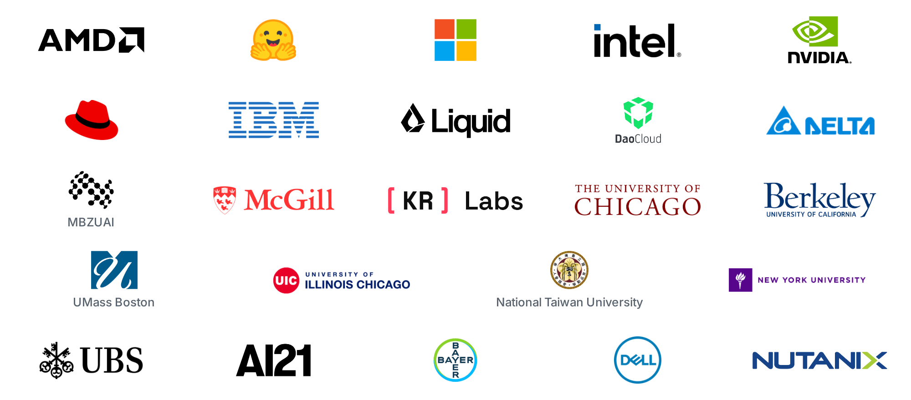 | vllm-project/semantic-router | 6.5k★ · camada de decisão programável para escolher o modelo certo. | curado — busca na internet |
| RouteLLM - use o modelo certo para cada pergunta | 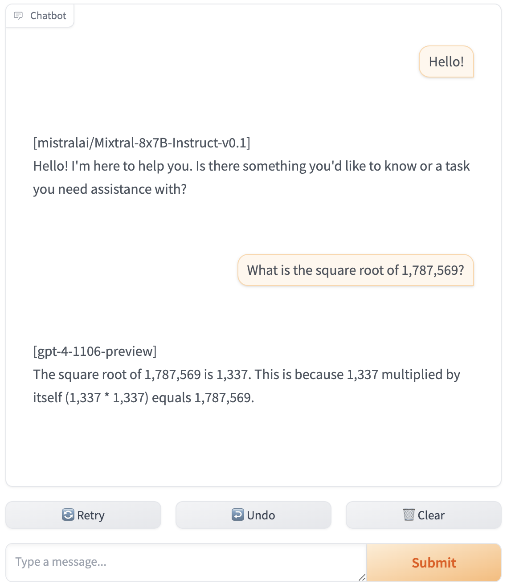 | lm-sys/RouteLLM | 5.7k★ · framework para rotear entre modelos caros e baratos e economizar. | curado — busca na internet |
| Welcome to Zyla API Hub | 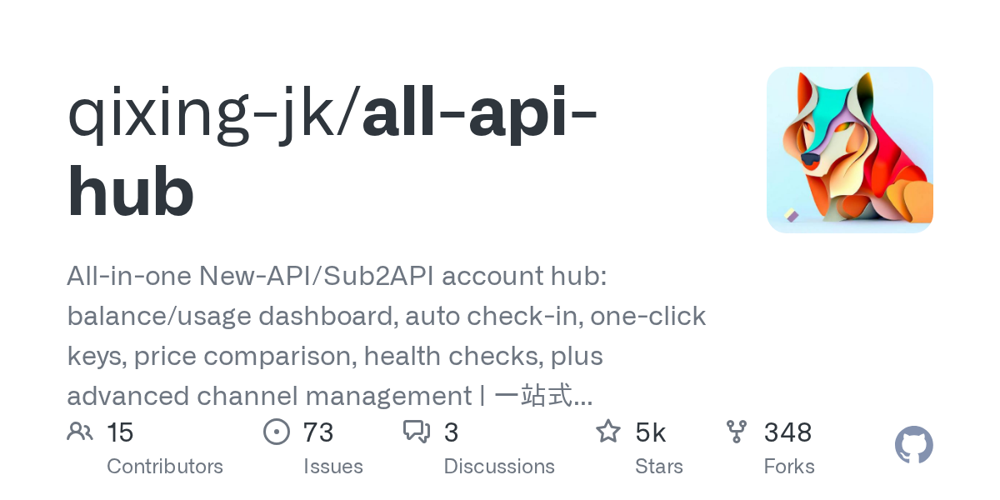 | qixing-jk/all-api-hub | 5k★ · painel de contas/uso (saldo, check-in, chaves) para gateways. | curado — busca na internet |
| Overview e primeiros passos com Langfuse | 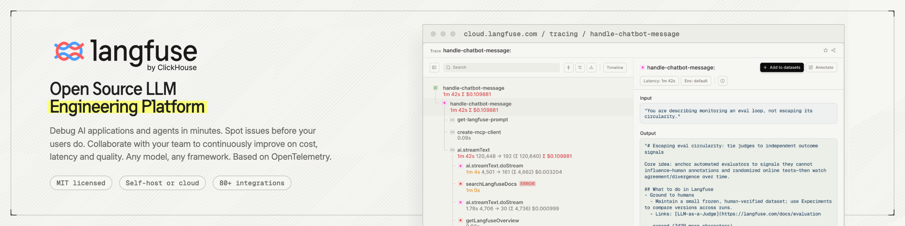 | langfuse/langfuse | 37.4k★ · plataforma de observabilidade, eval e prompt management de LLM. | curado — busca na internet |
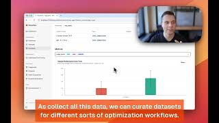 TensorZero Demo | 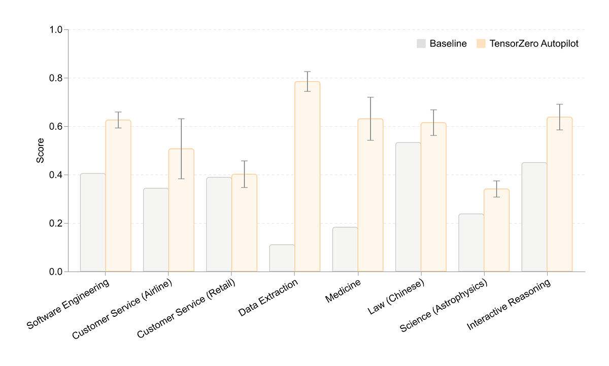 | tensorzero/tensorzero | 11.7k★ · LLMOps: gateway + observabilidade + experimentos num lugar. | curado — busca na internet |
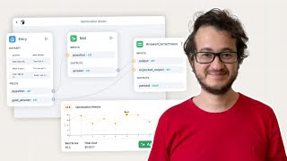 LangWatch LLM Optimization Studio | 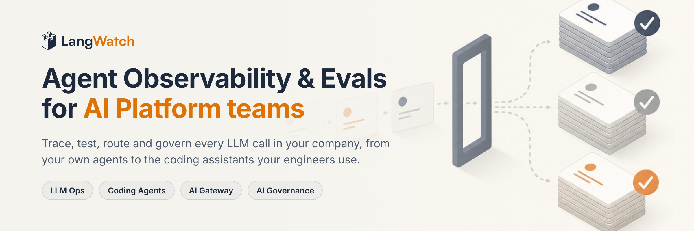 | langwatch/langwatch | 5k★ · observabilidade e avaliação de agentes para times de IA. | curado — busca na internet |